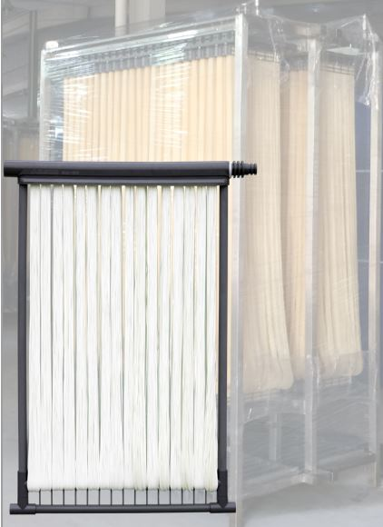

Memstar · 承信代理
SMM 系列 MBR 膜組件
為市政與工業 MBR 系統配置浸沒式膜分離單元

產品在流程中的角色
Memstar SMM 系列 MBR 膜組件
承信代理 Memstar SMM 系列浸沒式膜組件，用於市政與工業 MBR 系統的固液分離。PVDF 中空纖維膜可依膜槽與膜架需求配置；新建與汰換專案應核對膜絲版本、曝氣方式及操作條件，再確認型號與供貨內容。
- PVDF 浸沒式中空纖維膜組件
- SMM-1015／1522／2030 系列及 T 版本
- 膜架、曝氣與槽體介面依專案條件核對
Memstar 型號系列
共 3 筆型號／項目